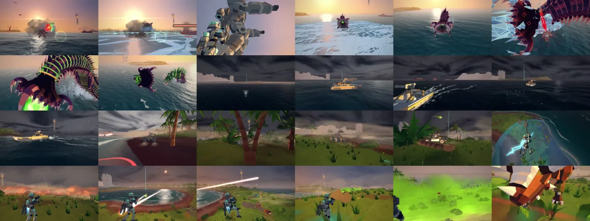
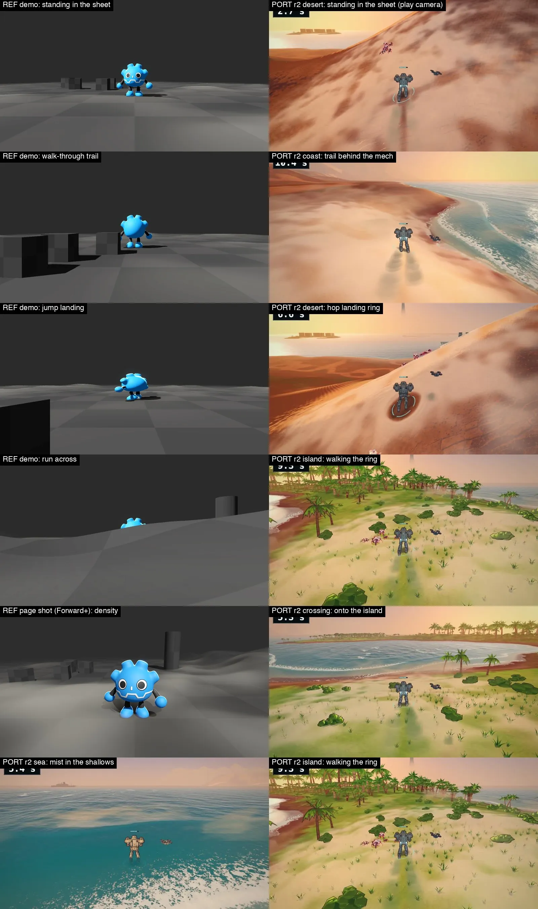
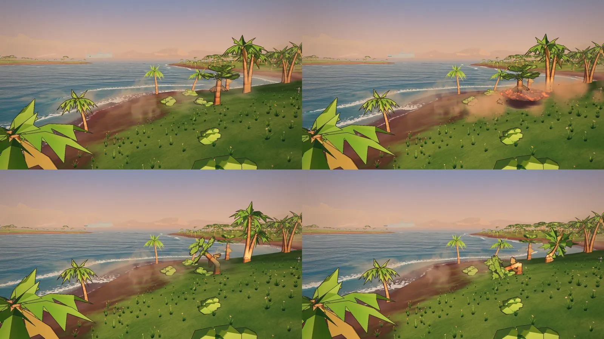
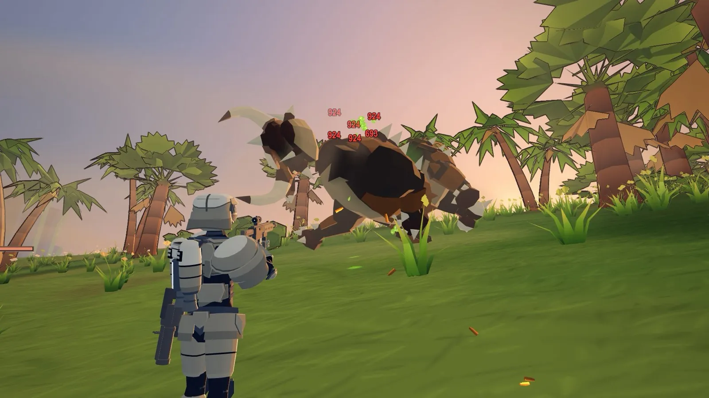
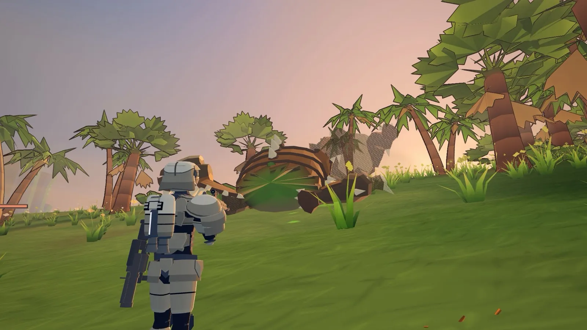
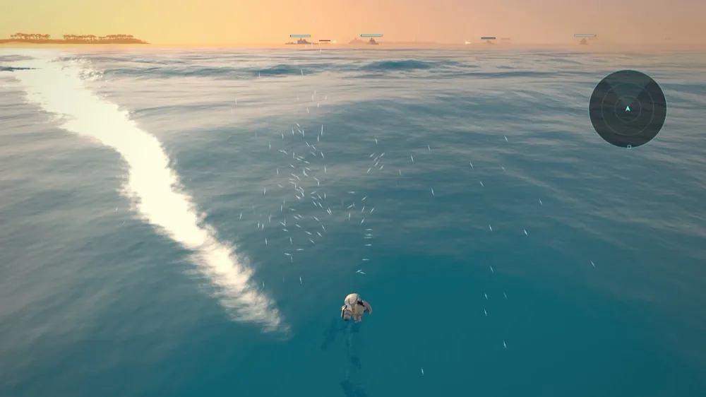
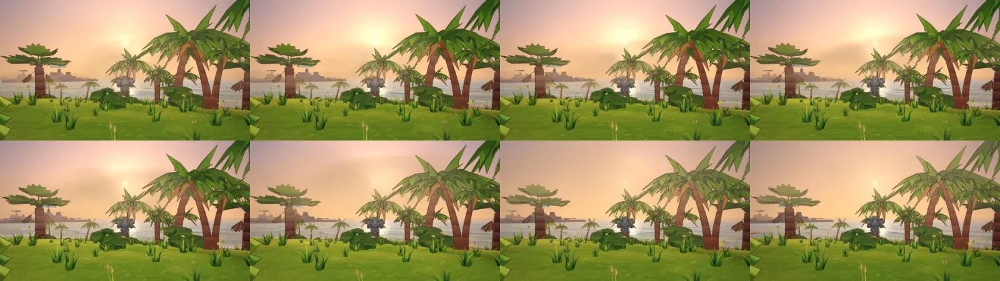

Steel Tide: to review
Version 17, 11-16 8:06 AM. New tonight: the trailer's first full closing cut (needs your eye), ground fog live (round 2 look built), Ocean Titan combat live, tree elite live, unlimited vehicle boost live (no capture), kill credit and Leviathan setting fixes live (no capture). The trailer clip is large (about 48 MB, 139 s): open it on Wi-Fi. Newest first. Total 60.0 MB.
Trailer: closing sequence, first full cut built, not live: needs your eye
Updated 11-16 6:40 AM ET · captured from trailer branch on Dock M112 base (no fog yet)
What changed: First full cut: one 139 s match, boss fight to island headshot; boarding is off (the pod lands 90 s into the stand).
Where to look: 0:00-1:28 boss half (clash, ice slam, missiles, finisher, storm, wave runner); 1:28-1:42 the slow drive; 1:42 on the island beats.

Open the video on its own (45.4 MB)Ground fog (desert, coast, island, sea mist) live M114 (round 1); round 2 built, not live
Updated 11-16 6:12 AM ET · captured from round 1 = live M114; still = round 2 lane build 98ae4cf29c
What changed: Round 2 removes the white blotches: it now reads as one even sheet like the reference. Settings > Graphics > Ground fog.
Where to look: Still: left column is the reference, right column ours; desert slopes still show dark smudges. Video: round 1 as live now.

Open the video on its own (1.9 MB)Ocean Titan in real combat live M117
Updated 11-16 4:29 AM ET · captured from lane build 69ac20a10f (same look as live M117)
What changed: Real fight: torpedoes sink the near ship, a second wave arrives; closer camera, broadside flash and smoke, warm tracers, fog wall at the sea's edge. Torpedo wake dropped.
Where to look: 4-12 s: broadside and the sinking ship; 15-21 s: tracers to the fliers (still thin). Each change has its own switch in Settings.
Viewer export of the titan and its two manned gatlings.
 Open the video on its own (2.9 MB)
Open the video on its own (2.9 MB)Tree elite (Widow) live M115
Updated 11-16 4:04 AM ET · captured from lane build 2fc4f3440d (live as M115)
What changed: Now live. The perched shot no longer hides it behind fronds; it hangs clear in front of the trunk.
Where to look: First still: perched under the crown; video 4-7 s perched and spitting, 9 s falls with the palm, 20 s breaks apart.
Your pick: it hangs upside down in a palm and fires a long-range shot. First frames: hanging and aiming, then on the ground after its tree is felled. Model only so far: the behaviour is being built on the laptop, so nothing here ran in a real match. No name is drawn in play.

 Open the video on its own (3.3 MB)
Open the video on its own (3.3 MB)Lagoon Sniper: true damage numbers live M98
Updated 11-15 11:52 PM ET · captured from lane build 72bfca79d2
What changed: A rifle hit now reads 317 (its real damage), not about 31,000; the Sniper has 18,000 health, so one kill no longer fills the weapon XP cap.
Where to look: Frames 2 to 4: the orange 317s on its chest. Frame 5: the kill, head and torso break apart over the water.

Trees felled by gunfire: rifle and grenade live M95
Updated 11-15 10:50 PM ET · captured from lane builds 751c07b045 / 02f815e348
What changed: Gunfire fells trees: four rifle rounds drop a small palm (it took ten); one grenade snaps a mid tree.
Where to look: Top sheet: the small palm falling after round four. Bottom sheet: the grenade blast and the trunk snapping.
Top: four rifle rounds fell a small palm (it took ten). Bottom: one grenade snaps a mid tree; palms outside the blast stay standing. Mech bullets on trees: not seen yet.


Lobber killed at close range live M91
Updated 11-15 10:35 PM ET · captured from M91 build
What changed: Pieces stay solid and fly apart at close range.
Where to look: Second frame: one oversize piece is still drawn faded for a moment, near the centre (known, minor).
Pieces stay solid and fly apart. In the second frame one oversize piece is drawn faded for a moment: that is the cap that stops a piece covering your view.

The Coil breaks into seven pieces live M95
Updated 11-15 10:27 PM ET · captured from lane build 04aff579f3
What changed: The Coil now breaks into seven solid pieces; before, one big faded piece was left.
Where to look: The strip left to right: alive, the kill, then 1 s and 3 s later: count the solid pieces.
It used to leave one big faded piece. Frames: alive, the kill, one second later, three seconds later. Look for solid pieces flying apart.

Maul killed at point-blank range live M91
Updated 11-15 8:33 PM ET · captured from lane round 2 build
What changed: A big chunk can no longer cover the screen when you kill a Maul point blank.
Where to look: Both frames: the screen centre stays clear at 0.15 s and at 1 s after the kill.
A big chunk can no longer cover the screen. Frames at 0.15 s and 1 s after the kill.


The pilot swims live M87
Updated 11-15 7:44 PM ET · captured from lane rounds 4 and 5
What changed: Deep water: a front crawl with helmet, shoulders and a stroking arm above the surface; no drowning by timer since M92.
Where to look: First sheet: the stroke at the play camera and from the side. Second still: the play view mid-stroke.
A front crawl in deep water: helmet, shoulders and a stroking arm above the surface. Since M92 a swimming pilot no longer drowns by a timer.


Extraction outro live M85, older capture
Updated 11-15 6:53 PM ET · captured from M85 build (older than live)
What changed: Since this capture the wait on the empty sunset was cut to about 3 seconds (M88).
Where to look: Video end: the sunset hold is longer here than live.
Captured on M85. Since then the wait on the empty sunset was cut to about 3 seconds (M88) and the HUD and health bars are hidden during the ending (M93); neither is in this clip.
 Open the video on its own (3.3 MB)
Open the video on its own (3.3 MB)Hit markers inside the reticle live M85
Updated 11-15 6:34 PM ET · captured from M85 lane build
What changed: Hit markers: amber on a weak point, red on a kill.
Where to look: The cross at the centre of each frame: the colour changes.
Amber on a weak point, red on a kill.

Island wind as a breeze live M85
Updated 11-15 5:41 PM ET · captured from the breeze change before it shipped; the same numbers are live since M85
What changed: Palms and grass sway about half as far, with slower gusts (tree sway 0.065 to 0.033, grass 0.55 to 0.28).
Where to look: Palm crowns and grass on the right: compare the sway with the older island wind.
Palms and grass sway about half as far as before.

Open the video on its own (1.8 MB)